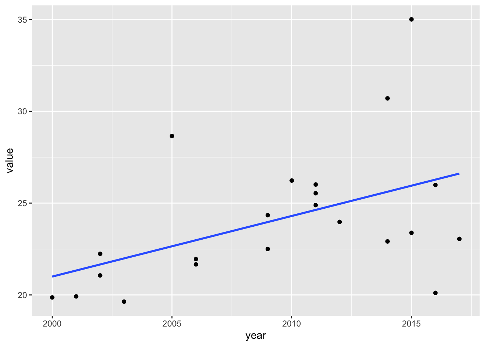
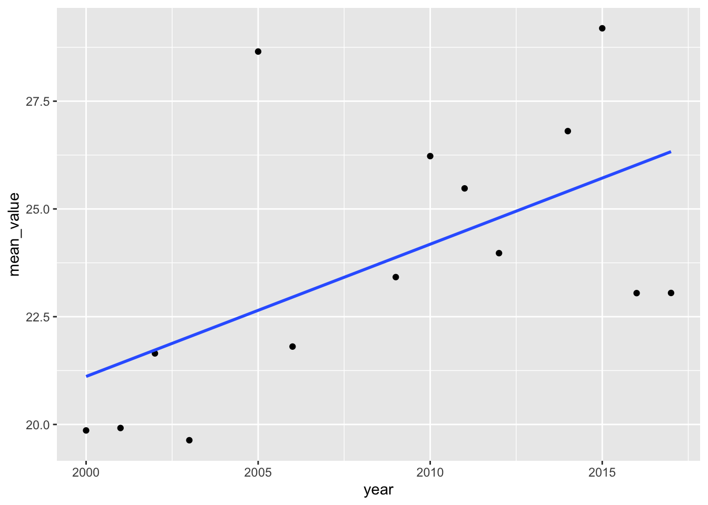
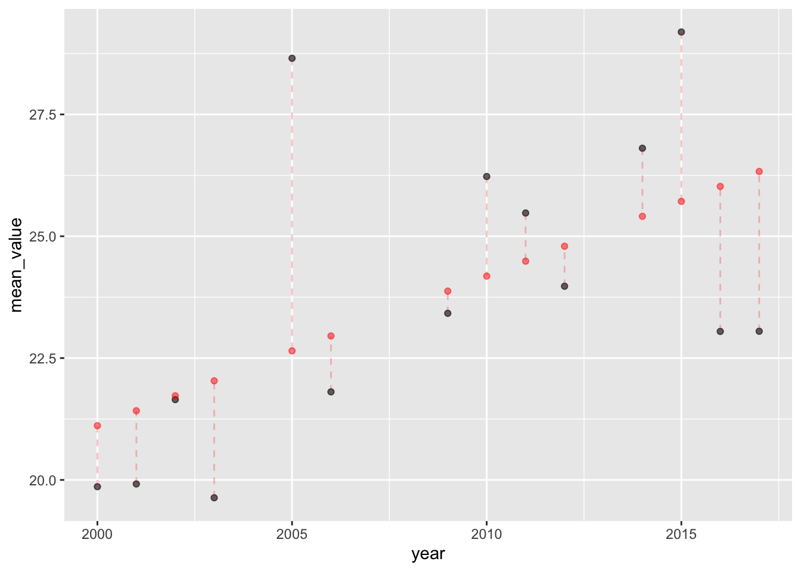
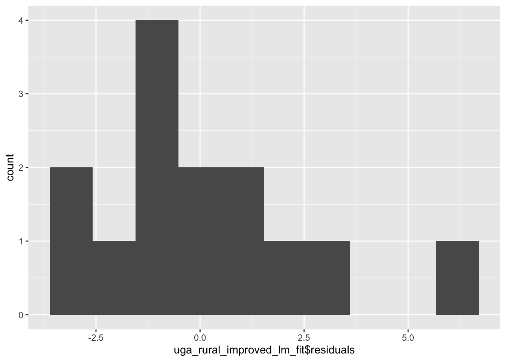
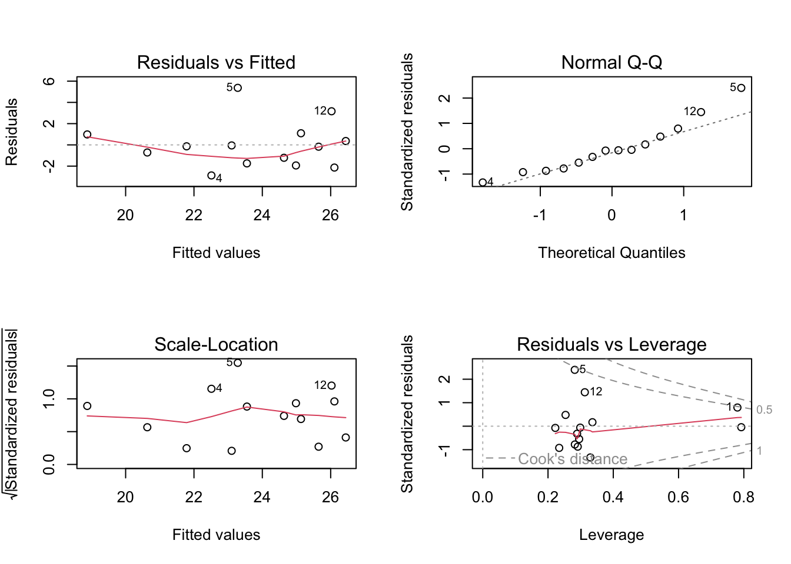
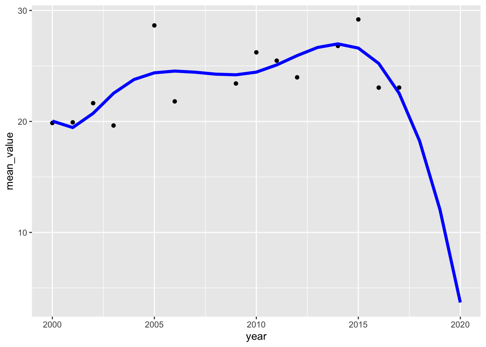
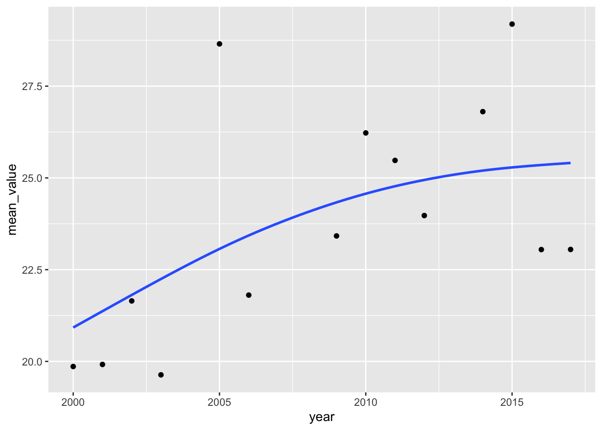
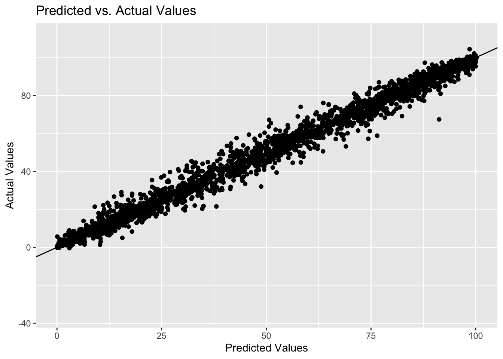

SDG6reproducibility
Model 1
Some text
[1] 2Model 2
Data import
Data exploration
Data exploration
Text
# A tibble: 58 × 3
var_short var_long n
<chr> <chr> <int>
1 s_imp_n Improved 280
2 s_imp_r Improved 1655
3 s_imp_u Improved 1675
4 s_lat_con_n Latrines: contained 2
5 s_lat_con_r Latrines: contained 2
6 s_lat_con_u Latrines: contained 2
7 s_lat_dtp_n Latrines: delivered to treatment plant 2
8 s_lat_ebo_n Latrines: emptied and buried onsite 17
9 s_lat_ebo_r Latrines: emptied and buried onsite 15
10 s_lat_ebo_u Latrines: emptied and buried onsite 11
# … with 48 more rows
# ℹ Use `print(n = ...)` to see more rowsMethods
JMP Methods report
First linear model
- Model for Uganda, rural, improved
- Data is not linear
Observations
Learn more about modeling in R:
- R4DS chapter - https://r4ds.had.co.nz/model-intro.html
- Book: Statistical Inference via Data Science: A ModernDive into R and the Tidyverse! - https://moderndive.com/
- R Packages: Tidymodels - https://www.tidymodels.org/
https://broom.tidymodels.org/articles/broom.html
jmpraw |>
#filter(iso3 == "SEN") |>
group_by(iso3, var_short, residence) |>
#mutate(mean = mean(value))
#summarise(mean(value))
summarise(mean = mean(value),
sd = sd(value))# A tibble: 2,681 × 5
# Groups: iso3, var_short [2,681]
iso3 var_short residence mean sd
<chr> <chr> <chr> <dbl> <dbl>
1 ABW s_imp_n national 98.0 0.458
2 ABW s_lat_n national 1.61 0.424
3 ABW s_od_n national 1.23 0.249
4 ABW s_sep_n national 85.8 4.83
5 ABW s_sew_n national 10.6 5.72
6 ABW s_treat_wtp_n national 95 NA
7 AFG s_imp_r rural 35.0 8.36
8 AFG s_imp_u urban 67.6 13.6
9 AFG s_lat_r rural 34.5 9.01
10 AFG s_lat_u urban 43.1 6.20
# … with 2,671 more rows
# ℹ Use `print(n = ...)` to see more rowsReference papers
- LINK
Gaps identified

# A tibble: 14 × 2
year mean_value
<dbl> <dbl>
1 2000 19.9
2 2001 19.9
3 2002 21.6
4 2003 19.6
5 2005 28.7
6 2006 21.8
7 2009 23.4
8 2010 26.2
9 2011 25.5
10 2012 24.0
11 2014 26.8
12 2015 29.2
13 2016 23.0
14 2017 23.1
By filtering the data for Uganda and improved sanitation, we can see from the graph above that the relationship between year and the stimates is approximately linear and so we will go ahead and fit a linear regression model. The variance(distance from pints to the line) also seems constant and ence homoskedasticity is attained.
Call:
lm(formula = mean_value ~ year, data = uga_rural_improved)
Residuals:
Min 1Q Median 3Q Max
-3.2784 -1.4396 -0.6382 1.2948 6.0041
Coefficients:
Estimate Std. Error t value Pr(>|t|)
(Intercept) -592.5279 256.9216 -2.306 0.0397 *
year 0.3068 0.1279 2.399 0.0336 *
---
Signif. codes: 0 '***' 0.001 '**' 0.01 '*' 0.05 '.' 0.1 ' ' 1
Residual standard error: 2.687 on 12 degrees of freedom
Multiple R-squared: 0.3241, Adjusted R-squared: 0.2678
F-statistic: 5.754 on 1 and 12 DF, p-value: 0.03359| term | estimate | std.error | statistic | p.value |
|---|---|---|---|---|
| (Intercept) | -592.53 | 256.92 | -2.31 | 0.04 |
| year | 0.31 | 0.13 | 2.40 | 0.03 |
| r.squared | adj.r.squared | sigma | statistic | p.value | df | logLik | AIC | BIC | deviance | df.residual | nobs |
|---|---|---|---|---|---|---|---|---|---|---|---|
| 0.32 | 0.27 | 2.69 | 5.75 | 0.03 | 1 | -32.62 | 71.25 | 73.16 | 86.62 | 12 | 14 |
using the linear model to predict from 2000-2020
# A tibble: 21 × 2
year pred
<dbl> <dbl>
1 2000 21.1
2 2001 21.4
3 2002 21.7
4 2003 22.0
5 2004 22.3
6 2005 22.6
7 2006 23.0
8 2007 23.3
9 2008 23.6
10 2009 23.9
# … with 11 more rows
# ℹ Use `print(n = ...)` to see more rowsFitted values

Model diagnostics
Ater fitting a model, it’s necessary to check the model to see if the model satisfies the assumptions of linear regression. If the model does not fit the data well (for example, the relationship is nonlinear), then you cannot use and interpret the model.

The first graph plots the relationship between the residuals and fitted values. A linear relationship is demonstrate by a horizontal red line.
The scale- location plot analyzes the homogeneity of the variance. We are also looking for a horizontal red line in this case.In this dataset, there is some evidence of homogeneity with points being equally far from the regression line across the observations. #The QQ plot above helps to assess the normality of residuals. Normally distributed residuals will fall along the grey dotted line as is our case above except for a few outliers
To assess whether or not outliers are driving our results we look at the residuals vs leverage plot. Standardized residuals greater than 3 or less than -3 are to be considered as outliers. In our dataset above, we do not see any values in that range (by looking at the y-axis), suggesting that there are no extreme outliers driving the results of our analysis.
Histogram plotting residuals

Join input with predictions
# A tibble: 21 × 3
year pred mean_value
<dbl> <dbl> <dbl>
1 2000 21.1 19.9
2 2001 21.4 19.9
3 2002 21.7 21.6
4 2003 22.0 19.6
5 2004 22.3 NA
6 2005 22.6 28.7
7 2006 23.0 21.8
8 2007 23.3 NA
9 2008 23.6 NA
10 2009 23.9 23.4
# … with 11 more rows
# ℹ Use `print(n = ...)` to see more rowsTrying to fit a generalized additive model since the R-SQUARED in OLS is low
Family: gaussian
Link function: identity
Formula:
mean_value ~ year
Parametric coefficients:
Estimate Std. Error t value Pr(>|t|)
(Intercept) -592.5279 256.9216 -2.306 0.0397 *
year 0.3068 0.1279 2.399 0.0336 *
---
Signif. codes: 0 '***' 0.001 '**' 0.01 '*' 0.05 '.' 0.1 ' ' 1
R-sq.(adj) = 0.268 Deviance explained = 32.4%
GCV = 8.4215 Scale est. = 7.2184 n = 14The r squared using the GAM is almost similar to the r squared using OLS regression
Fitting polynomial of order 4
Call:
lm(formula = mean_value ~ poly(year, 4), data = uga_rural_improved)
Residuals:
Min 1Q Median 3Q Max
-2.8763 -1.6102 -0.1530 0.8295 5.3705
Coefficients:
Estimate Std. Error t value Pr(>|t|)
(Intercept) 23.7650 0.7061 33.658 8.89e-11 ***
poly(year, 4)1 6.4448 2.6419 2.439 0.0374 *
poly(year, 4)2 -4.2971 2.6419 -1.627 0.1383
poly(year, 4)3 -0.9165 2.6419 -0.347 0.7366
poly(year, 4)4 -2.1213 2.6419 -0.803 0.4427
---
Signif. codes: 0 '***' 0.001 '**' 0.01 '*' 0.05 '.' 0.1 ' ' 1
Residual standard error: 2.642 on 9 degrees of freedom
Multiple R-squared: 0.5098, Adjusted R-squared: 0.292
F-statistic: 2.34 on 4 and 9 DF, p-value: 0.1331| term | estimate | std.error | statistic | p.value |
|---|---|---|---|---|
| (Intercept) | 23.77 | 0.71 | 33.66 | 0.00 |
| poly(year, 4)1 | 6.44 | 2.64 | 2.44 | 0.04 |
| poly(year, 4)2 | -4.30 | 2.64 | -1.63 | 0.14 |
| poly(year, 4)3 | -0.92 | 2.64 | -0.35 | 0.74 |
| poly(year, 4)4 | -2.12 | 2.64 | -0.80 | 0.44 |
| r.squared | adj.r.squared | sigma | statistic | p.value | df | logLik | AIC | BIC | deviance | df.residual | nobs |
|---|---|---|---|---|---|---|---|---|---|---|---|
| 0.51 | 0.29 | 2.64 | 2.34 | 0.13 | 4 | -30.37 | 72.75 | 76.58 | 62.82 | 9 | 14 |
Adding a polynomial term significantly improves the r squared
Predictions using a polynomial term of order 4
# A tibble: 21 × 2
year pred
<dbl> <dbl>
1 2000 18.9
2 2001 20.6
3 2002 21.8
4 2003 22.5
5 2004 23.0
6 2005 23.3
7 2006 23.5
8 2007 23.8
9 2008 24.2
10 2009 24.6
# … with 11 more rows
# ℹ Use `print(n = ...)` to see more rowsplot

Fitting a spline
Call:
lm(formula = mean_value ~ bs(year, knots = c(2003, 2010)), data = uga_rural_improved)
Residuals:
Min 1Q Median 3Q Max
-2.9031 -1.6647 0.1055 0.8146 4.2707
Coefficients:
Estimate Std. Error t value Pr(>|t|)
(Intercept) 20.0339 2.5664 7.806 5.21e-05 ***
bs(year, knots = c(2003, 2010))1 -1.9650 4.6073 -0.427 0.6810
bs(year, knots = c(2003, 2010))2 7.5350 4.8380 1.557 0.1580
bs(year, knots = c(2003, 2010))3 0.4179 5.5910 0.075 0.9423
bs(year, knots = c(2003, 2010))4 10.5240 4.6241 2.276 0.0524 .
bs(year, knots = c(2003, 2010))5 2.5066 3.5174 0.713 0.4963
---
Signif. codes: 0 '***' 0.001 '**' 0.01 '*' 0.05 '.' 0.1 ' ' 1
Residual standard error: 2.615 on 8 degrees of freedom
Multiple R-squared: 0.5732, Adjusted R-squared: 0.3065
F-statistic: 2.149 on 5 and 8 DF, p-value: 0.1606| term | estimate | std.error | statistic | p.value |
|---|---|---|---|---|
| (Intercept) | 20.03 | 2.57 | 7.81 | 0.00 |
| bs(year, knots = c(2003, 2010))1 | -1.97 | 4.61 | -0.43 | 0.68 |
| bs(year, knots = c(2003, 2010))2 | 7.54 | 4.84 | 1.56 | 0.16 |
| bs(year, knots = c(2003, 2010))3 | 0.42 | 5.59 | 0.07 | 0.94 |
| bs(year, knots = c(2003, 2010))4 | 10.52 | 4.62 | 2.28 | 0.05 |
| bs(year, knots = c(2003, 2010))5 | 2.51 | 3.52 | 0.71 | 0.50 |
| r.squared | adj.r.squared | sigma | statistic | p.value | df | logLik | AIC | BIC | deviance | df.residual | nobs |
|---|---|---|---|---|---|---|---|---|---|---|---|
| 0.57 | 0.31 | 2.61 | 2.15 | 0.16 | 5 | -29.4 | 72.81 | 77.28 | 54.69 | 8 | 14 |
Predictions using splines
# A tibble: 21 × 2
year pred
<dbl> <dbl>
1 2000 20.0
2 2001 19.4
3 2002 20.7
4 2003 22.5
5 2004 23.8
6 2005 24.4
7 2006 24.5
8 2007 24.4
9 2008 24.3
10 2009 24.2
# … with 11 more rows
# ℹ Use `print(n = ...)` to see more rowsplot using splines


Model predictions all countries
# A tibble: 4,549 × 9
source type year var_short value iso3 var_long residence san_service_ch…¹
<chr> <chr> <dbl> <chr> <dbl> <chr> <chr> <chr> <fct>
1 MICS03 Survey 2003 s_imp_r 26 AFG Improved rural user interface
2 NRVA03 Survey 2003 s_imp_r 28.6 AFG Improved rural user interface
3 NRVS05 Survey 2005 s_imp_r 31.2 AFG Improved rural user interface
4 NRVA08 Survey 2008 s_imp_r 30.1 AFG Improved rural user interface
5 MICS11 Survey 2011 s_imp_r 44.2 AFG Improved rural user interface
6 NRVA12 Survey 2012 s_imp_r 36.3 AFG Improved rural user interface
7 ALCS14 Survey 2014 s_imp_r 27 AFG Improved rural user interface
8 DHS15 Survey 2015 s_imp_r 48.0 AFG Improved rural user interface
9 ALCS17 Survey 2017 s_imp_r 43.8 AFG Improved rural user interface
10 MICS03 Survey 2003 s_imp_u 44.2 AFG Improved urban user interface
# … with 4,539 more rows, and abbreviated variable name ¹san_service_chain
# ℹ Use `print(n = ...)` to see more rowsCreate a tidy dataframe with model intercept and coefficient
# A tibble: 657 × 4
# Groups: iso3, residence, var_long [657]
iso3 residence var_long rsq
<chr> <chr> <chr> <dbl>
1 AFG rural Improved 0.411
2 AFG rural Shared 0.000291
3 AFG urban Improved 0.832
4 AFG urban Shared 0.0303
5 AGO rural Improved 0.981
6 AGO rural Shared 0
7 AGO urban Improved 0.658
8 AGO urban Shared 0
9 AIA urban Improved 0.882
10 AIA urban Shared 0
# … with 647 more rows
# ℹ Use `print(n = ...)` to see more rows# A tibble: 657 × 15
# Groups: iso3, residence, var_long [657]
iso3 reside…¹ var_l…² r.squ…³ adj.r…⁴ sigma statis…⁵ p.value df logLik
<chr> <chr> <chr> <dbl> <dbl> <dbl> <dbl> <dbl> <dbl> <dbl>
1 AFG rural Improv… 4.11e-1 0.313 6.92 4.19e+0 8.66e-2 1 -25.7
2 AFG rural Shared 2.91e-4 -0.250 5.88 1.16e-3 9.74e-1 1 -17.9
3 AFG urban Improv… 8.32e-1 0.804 6.00 2.98e+1 1.58e-3 1 -24.5
4 AFG urban Shared 3.03e-2 -0.212 11.7 1.25e-1 7.41e-1 1 -22.0
5 AGO rural Improv… 9.81e-1 0.976 0.984 2.03e+2 1.40e-4 1 -7.20
6 AGO rural Shared 0 0 NaN NA NA NA Inf
7 AGO urban Improv… 6.58e-1 0.573 5.91 7.70e+0 5.01e-2 1 -18.0
8 AGO urban Shared 0 0 NaN NA NA NA Inf
9 AIA urban Improv… 8.82e-1 0.823 1.05 1.49e+1 6.09e-2 1 -4.49
10 AIA urban Shared 0 0 NaN NA NA NA Inf
# … with 647 more rows, 5 more variables: AIC <dbl>, BIC <dbl>, deviance <dbl>,
# df.residual <int>, nobs <int>, and abbreviated variable names ¹residence,
# ²var_long, ³r.squared, ⁴adj.r.squared, ⁵statistic
# ℹ Use `print(n = ...)` to see more rows, and `colnames()` to see all variable names# A tibble: 1,314 × 8
# Groups: iso3, residence, var_long [657]
iso3 residence var_long term estimate std.error statistic p.value
<chr> <chr> <chr> <chr> <dbl> <dbl> <dbl> <dbl>
1 AFG rural Improved (Intercept) -2150. 1068. -2.01 0.0908
2 AFG rural Improved year 1.09 0.531 2.05 0.0866
3 AFG rural Shared (Intercept) 70.5 1661. 0.0425 0.968
4 AFG rural Shared year -0.0281 0.825 -0.0341 0.974
5 AFG urban Improved (Intercept) -4981. 925. -5.38 0.00169
6 AFG urban Improved year 2.51 0.460 5.45 0.00158
7 AFG urban Shared (Intercept) 1195. 3300. 0.362 0.735
8 AFG urban Shared year -0.580 1.64 -0.354 0.741
9 AGO rural Improved (Intercept) -2334. 165. -14.1 0.000145
10 AGO rural Improved year 1.17 0.0822 14.3 0.000140
# … with 1,304 more rows
# ℹ Use `print(n = ...)` to see more rowsModel diagnostics
Display only coefficients
Adding predicted/fitted values to the model
# A tibble: 13,797 × 5
# Groups: iso3, residence, var_long [657]
iso3 residence var_long year .fitted
<chr> <chr> <chr> <dbl> <dbl>
1 AFG rural Improved 2000 24.4
2 AFG rural Improved 2001 25.5
3 AFG rural Improved 2002 26.6
4 AFG rural Improved 2003 27.7
5 AFG rural Improved 2004 28.8
6 AFG rural Improved 2005 29.9
7 AFG rural Improved 2006 31.0
8 AFG rural Improved 2007 32.1
9 AFG rural Improved 2008 33.1
10 AFG rural Improved 2009 34.2
# … with 13,787 more rows
# ℹ Use `print(n = ...)` to see more rows# A tibble: 3,810 × 10
# Groups: iso3, residence, var_long [657]
iso3 residence var_long mean_va…¹ year .resid .hat .sigma .cooksd .std.…²
<chr> <chr> <chr> <dbl> <dbl> <dbl> <dbl> <dbl> <dbl> <dbl>
1 AFG rural Improved 27.3 2003 -0.424 0.467 7.58 0.00309 -0.0839
2 AFG rural Improved 31.2 2005 1.30 0.311 7.55 0.0115 0.226
3 AFG rural Improved 30.1 2008 -3.04 0.166 7.44 0.0229 -0.481
4 AFG rural Improved 44.2 2011 7.80 0.126 6.60 0.104 1.20
5 AFG rural Improved 36.3 2012 -1.14 0.136 7.56 0.00246 -0.177
6 AFG rural Improved 27 2014 -12.7 0.192 4.22 0.492 -2.03
7 AFG rural Improved 48.0 2015 7.30 0.238 6.60 0.227 1.21
8 AFG rural Improved 43.8 2017 0.866 0.364 7.57 0.00705 0.157
9 AFG rural Shared 16.7 2008 2.67 0.626 6.31 0.463 0.744
10 AFG rural Shared 6.35 2011 -7.59 0.233 4.59 0.329 -1.47
# … with 3,800 more rows, and abbreviated variable names ¹mean_value,
# ².std.resid
# ℹ Use `print(n = ...)` to see more rowsJoin input with predictions
# A tibble: 13,797 × 6
# Groups: iso3, residence, var_long [657]
iso3 residence var_long year .fitted mean_value
<chr> <chr> <chr> <dbl> <dbl> <dbl>
1 AFG rural Improved 2000 24.4 NA
2 AFG rural Improved 2001 25.5 NA
3 AFG rural Improved 2002 26.6 NA
4 AFG rural Improved 2003 27.7 27.3
5 AFG rural Improved 2004 28.8 NA
6 AFG rural Improved 2005 29.9 31.2
7 AFG rural Improved 2006 31.0 NA
8 AFG rural Improved 2007 32.1 NA
9 AFG rural Improved 2008 33.1 30.1
10 AFG rural Improved 2009 34.2 NA
# … with 13,787 more rows
# ℹ Use `print(n = ...)` to see more rowsplot predicted vs actual values

Spread data
# A tibble: 7,266 × 5
# Groups: iso3, residence [346]
iso3 residence year Improved Shared
<chr> <chr> <dbl> <dbl> <dbl>
1 AFG rural 2000 24.4 14.3
2 AFG rural 2001 25.5 14.2
3 AFG rural 2002 26.6 14.2
4 AFG rural 2003 27.7 14.2
5 AFG rural 2004 28.8 14.1
6 AFG rural 2005 29.9 14.1
7 AFG rural 2006 31.0 14.1
8 AFG rural 2007 32.1 14.1
9 AFG rural 2008 33.1 14.0
10 AFG rural 2009 34.2 14.0
# … with 7,256 more rows
# ℹ Use `print(n = ...)` to see more rows